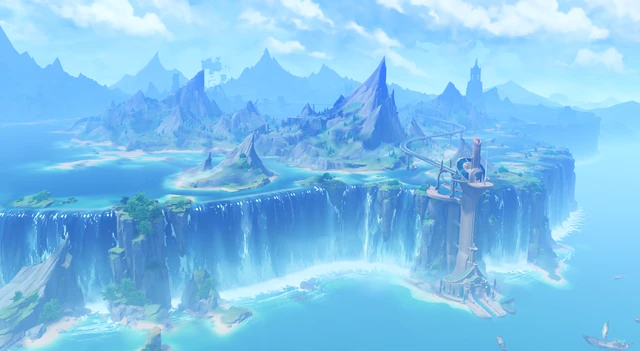

Fontaine · Geography & Locations
Fontaine: The Nation of Justice
Fontaine’s court-centered public life and Archon Quest revolve around a prophecy tied to Egeria, Focalors’ hidden plan, and the Hydro Dragon Sovereign Neuvillette.

A nation where trials take center stage
Fontaine is one of Teyvat’s nations and is introduced as the Nation of Justice. Its story gives particular weight to the Court of Fontaine and the Opera Epiclese, where trials become public events and the Oratrice Mecanique d’Analyse Cardinale announces verdicts. HoYoverse’s region introduction also highlights Fontaine’s culture, art, and technology.
The Opera is both a court venue and a stage for public attention. The Archon Quest uses that setting to examine the gap between the image Fontaine presents and the choices its institutions make; it does not establish that every trial is a simple or impartial measure of truth.
The prophecy and Fontaine’s origin
The Fontaine prophecy says that its people will be dissolved into water and that the Hydro Archon will remain alone, weeping on her throne. The Archon Quest connects this fate to Fontaine’s origin, rather than treating the prophecy as an unrelated disaster or a verified account of every detail of the nation’s future.
Under the former Hydro Archon Egeria, Oceanids were given human forms through the power of the Primordial Sea. The quest identifies this act as the source of the Fontainians’ vulnerability to that water and as the original sin behind the prophecy. The account is revealed through the Archon Quest’s ruins and dialogue, not through a prophecy carved at the ruins of Remuria.
Focalors, Furina, and the Oratrice
When Focalors became Hydro Archon, she separated her divinity from her body and spirit. The human Furina was left to present herself as the Archon and keep their plan secret for five hundred years, while Focalors remained hidden within the Oratrice.
The Oratrice accumulated Indemnitium through Fontaine’s judicial system. Focalors intended to use that power to destroy the Hydro Archon’s divine throne. The public proceedings and Furina’s performance were parts of that plan, but the game does not describe the energy as simply harvested from an audience’s collective faith.
The final verdict changes Fontaine’s divine order
After the Oratrice’s verdict, Focalors used its accumulated power to destroy the Hydro Archon’s divine throne and return Hydro’s stolen authority to Neuvillette, the Hydro Dragon Sovereign. The quest presents Focalors’s death and the end of that divine throne as the price of her plan.
With his authority restored, Neuvillette absolved the Fontainians of their original sin. They became true humans and did not dissolve when the flood covered Fontaine. This resolves the prophecy’s threatened fate for its people; it does not support broader claims that the flood caused no deaths anywhere or that Fontaine became free of every celestial influence.
Furina after the public role
Furina’s five-century performance as the Hydro Archon ends with the Archon Quest. Her Story Quest, Animula Choragi Act I, follows her as she faces a theater production and works out how to take part on her own terms. It does not establish a permanent retirement or make her Fontaine’s stage director.
The finale returns the Hydro authority to Neuvillette and destroys the divine throne instead of naming another Hydro Archon. Neuvillette’s established office is Iudex of Fontaine; that title alone is not evidence that he became a conventional head of state.
This is an original CoreGG reading guide, not an official HoYoverse article or a reproduction of the game text. Source links below identify the records used so you can check the original context.
Sources & references
Check these sources for the original game text and reference trail.